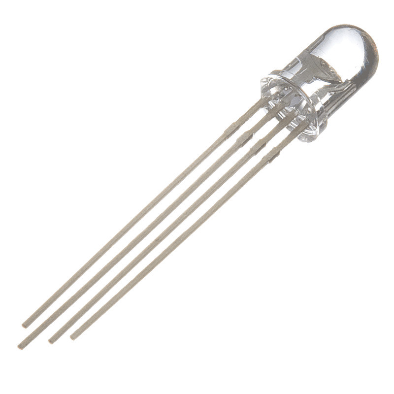
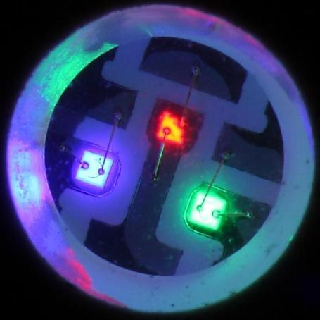
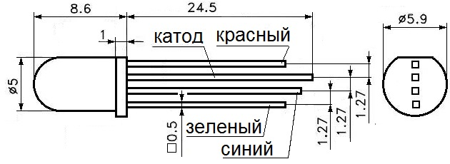
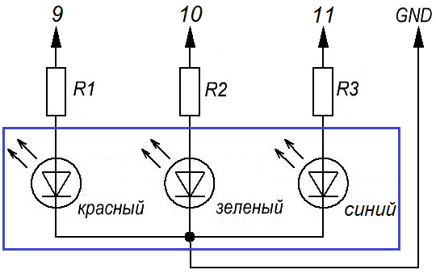

Управление RGB-светодиодом
RGB-светодиод на самом деле это три светодиода разного цвета в одном корпусе (рис. 1).



Включая разные светодиоды с различной яркостью можно комбинировать и получать разные цвета. Для Arduino UNO, где количество градаций яркости равно 256 можно получить 2563=16581375 возможных цветов.
Светодиод, который мы будем использоваться общим катодом, т.е. все три светодиода конструктивно соединены катодами к одному выводу. Этот вывод мы подсоединим к выводу GND. Остальные выводы, через ограничительные резисторы, надо подсоединить к выводам ШИМ (выводы 9-11 рис. 3).Таким образом можно будет управлять каждым светодиодом отдельно.

В первом скетче показано, как включить каждый светодиод отдельно.
Скетч 1
int red = 9;
int green = 10;
int blue = 11;
void setup(){
pinMode(red, OUTPUT);
pinMode(blue, OUTPUT);
pinMode(green, OUTPUT);
}
void loop(){
//включение/выключение красного светодиод
digitalWrite(red, HIGH);
delay(500);
digitalWrite(red, LOW);
delay(500);
//включение/выключение зеленого светодиода
digitalWrite(green, HIGH);
delay(500);
digitalWrite(green, LOW);
delay(500);
//включение/выключение синего светодиода
digitalWrite(blue, HIGH);
delay(500);
digitalWrite(blue, LOW);
delay(500);
}
Скетч 2
В данном скетче используются команды analogWrite() и random(), чтобы получать различные случайные значения яркости для светодиодов. Получаем разные цвета, меняющиеся случайным образом.
int red = 9;
int green = 10;
int blue = 11;
void setup(){
pinMode(red, OUTPUT);
pinMode(blue, OUTPUT);
pinMode(green, OUTPUT);
}
void loop(){
analogWrite(red, random(256));
analogWrite(blue, random(256));
analogWrite(green, random(256));
delay(1000);//ждем 1 сек
}
Random(256) - возвращает случайное число в диапазоне от 0 до 255.
Скетч 3
Этот скетч демонстрирует плавные переходы цветов от красного к зеленому, затем к синему, красному, зеленому и т.д.
int red = 9;
int green = 10;
int blue = 11;
int intensive;
void setup(){
pinMode(red, OUTPUT);
pinMode(blue, OUTPUT);
pinMode(green, OUTPUT);
}
void loop(){
for (int intensive=0;intensive<256;intensive++){
analogWrite(red, 255-intensive);
analogWrite(green, intensive);
delay(10);
}
for (int intensive=0;intensive<256;intensive++){
analogWrite(green, 255-intensive);
analogWrite(blue, intensive);
delay(10);
}
for (int intensive=0;intensive<256;intensive++){
analogWrite(blue, 255-intensive);
analogWrite(red, intensive);
delay(10);
}
}